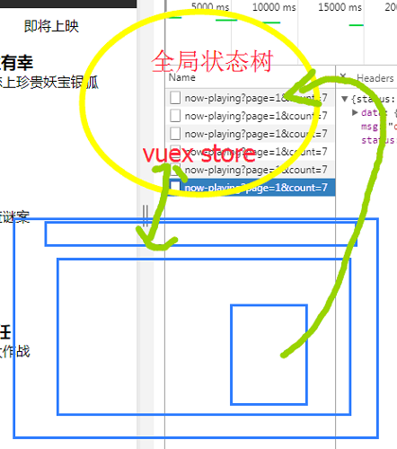

vue树：
vue树层结构 就是一个 二维数组 或者 高维数组的遍历 几个v-for嵌套
vuex:
全局状态数据管理
管理的数据是多页面需要共享的数据

vuex 使用：
一、同步：
1、安装

2、新建 store文件夹 ==>新建文件 index.js

3、main.js 引入 注册


4、储存 commit ==>mutations

5、index.js添加 mutation 名字
6、.vue 使用

更加规范的写法：

简洁写法：


1. Vuex 是一个专为 Vue.js 应用程序开发的状态管理模式。它采用集中式存储管理应用的所有组件的状态，并以相应的规则保证状态以一种可预测的方式发生变化
vuex分为几层（4层 ）？
Vue Components Actions Mutations State

(1)state:单一状态树 ,每个应用将仅仅包含一个 store 实例。
*this.$store.state.状态名字
*...mapState(["title"])
(2)getters:可以从store 中的 state 中派生出一些状态，getters的返回值会根据它的依赖被缓存起来，且只有当它的依赖值发生了改变才会被重新计算。
*可以认为是 store 的计算属性
*this.$store.getters.计算属性名字
*...mapGetters(["getFilms"])
(3)mutations：更改 Vuex 的 store 中的状态的唯一方法是提交 mutation。
*常量的设计风格
[SOME_MUTATION] (state) {
// mutate state
}
*必须是同步函数
*this.$store.commit("type","payload");
(4)actions: 可以同步可以异步
*Action 提交的是 mutation，而不是直接变更状态。
*Action 可以包含任意异步操作。
*this.$store.dispatch("type","payload")
(5) 代码
const store = new Vuex.Store({
state: {
count: 0
},
mutations: {
increment (state ,payload) {
}
},
actions: {
increment (context, payload) {
context.commit('increment')
}
}
})
2. 注意:
(1)应用层级的状态应该集中到单个 store 对象中。
(2)提交 mutation 是更改状态的唯一方法，并且这个过程是同步的,不能写异步方法。
(3)异步逻辑都应该封装到 action 里面。
3. 借助 vue chrome devtools 进行状态追踪


vuex/index.js
import Vue from 'vue'
import Vuex from 'vuex'
Vue.use(Vuex);
const state = {
films: null,
message: "hello world"
}
const mutations = {
setFilms: (state, filmsData)=>{
state.films = filmsData;
}
}
const actions = {
setFilms: ({commit}, filmsData)=>{
commit('setFilms', filmsData)
}
}
const getters = {
getTop3: function(state) {
return state.films.slice(0, 3);
}
}
export default new Vuex.Store({
state,
mutations,
actions,
getters
})
main.js

xxx.vue
//使用
{{$store.state.message}}
//修改
that.$store.dispatch("setFilms", res.data.data.films);